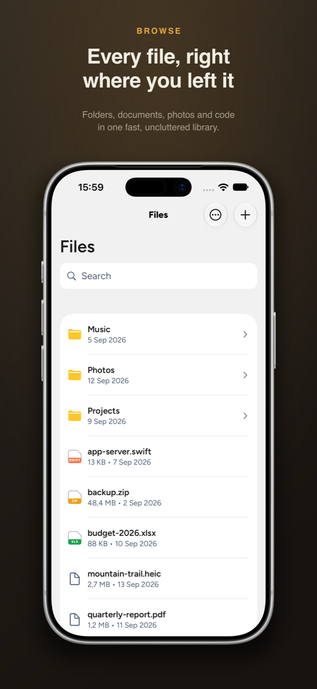
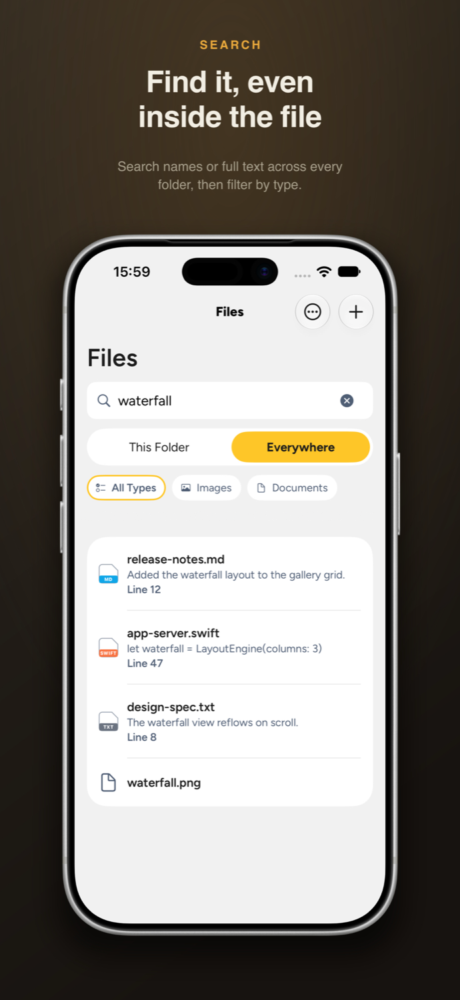
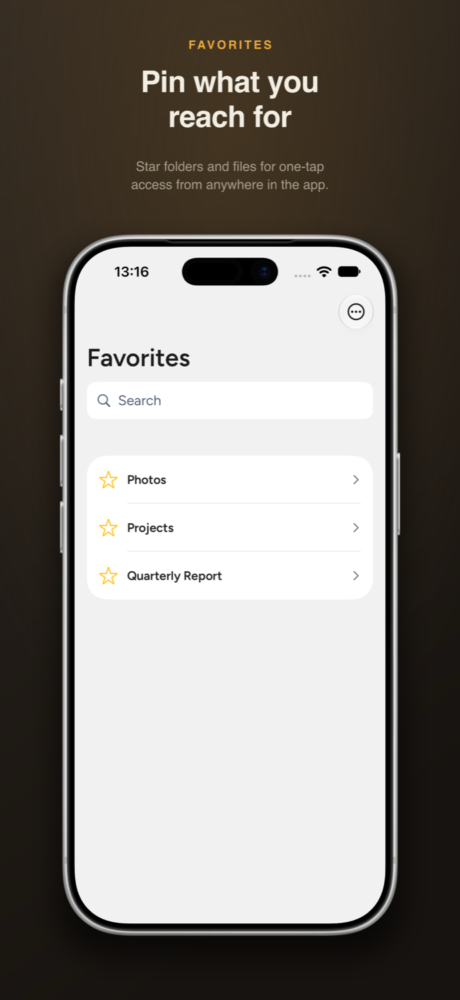
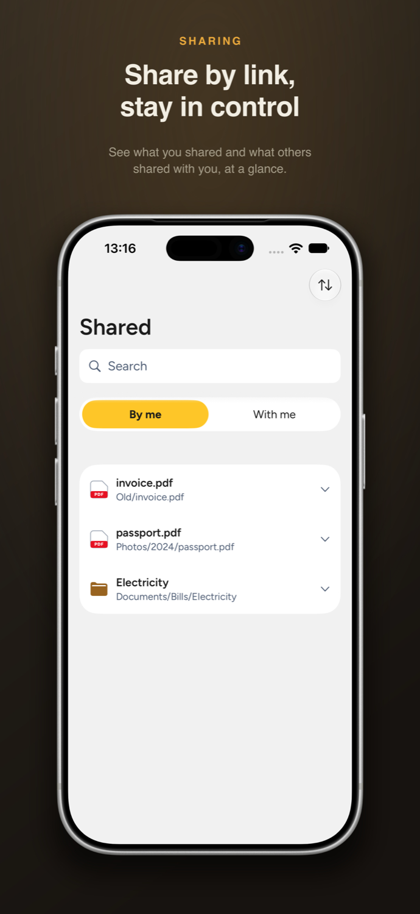
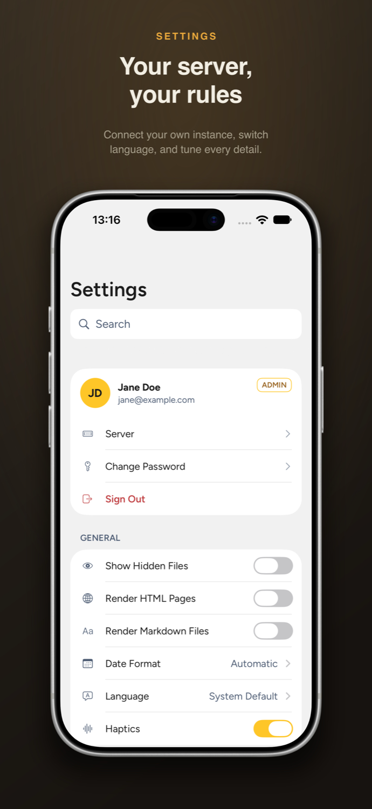

For your own server
NextExplorer for iOS is a fast, native file browser for your own self-hosted server. Browse, preview, search and share. Your files stay between your device and the server you choose.





A native client built for iOS. You bring the server; NextExplorer for iOS brings the browsing.
Folders, documents, photos, video, code and archives in one clean library, with rich previews and a swipeable media gallery.
Search by name or full text across every folder, then filter by type to jump straight to what you need.
Star what you reach for, share files by link, and see what others shared with you, all in one place.
Username and password, or single sign-on and passkeys through your own identity provider.
A saved-copy view keeps your recent folders readable when the connection drops, then refreshes when you're back.
17 languages with full right-to-left support, plus complete VoiceOver and Dynamic Type accessibility.
Your server, your rules. NextExplorer for iOS is a client: you supply the address of your own compatible file server and sign in with your own credentials. Your files, credentials and activity stay between your device and that server, and nowhere else.
Questions, a bug, or a feature idea? Get in touch and I'll get back to you, usually within a couple of days.
Email support